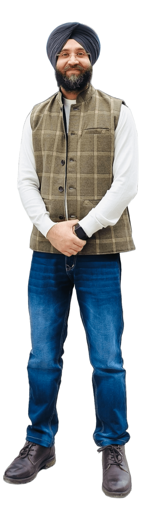
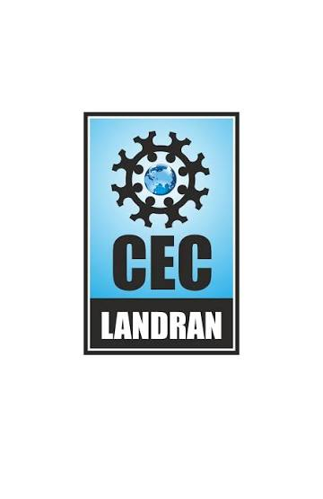
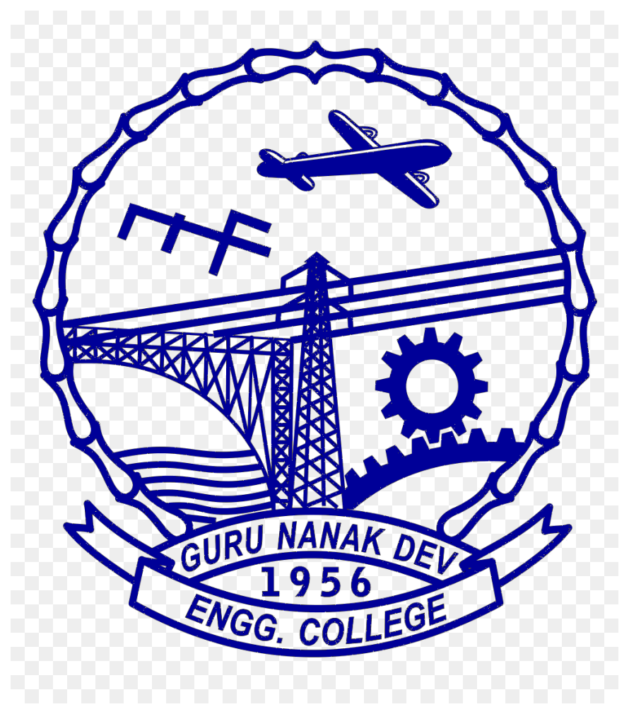
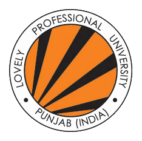
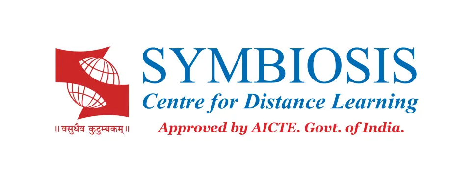
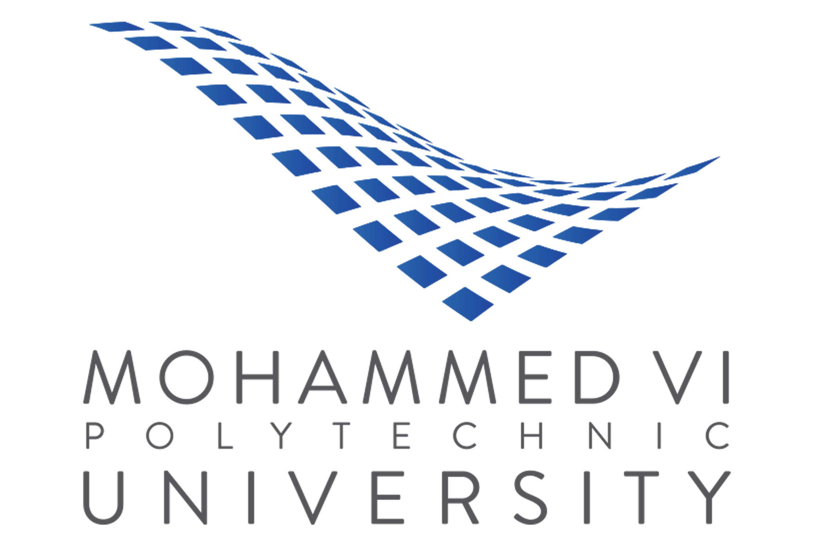

Assistant Professor · Researcher
Gurjot Singh Gaba, Ph.D.
I research and teach cybersecurity at the intersection of applied cryptography, post-quantum transition, aviation and industrial systems, secure communications, and cyber resilience. My work combines protocol design, risk assessment, field validation, and international collaboration to strengthen trustworthy digital infrastructures.

Research expertise
Cybersecurity across systems, infrastructures, and transitions
Applied Cryptography & Privacy
Authentication, key establishment, access control, zero-knowledge proofs, and privacy-preserving protocols.
Explore related work →Post-Quantum & Quantum-Ready Security
PQC migration, crypto-agility, quantum readiness, QKD, EuroQCI, and governance.
Explore related work →Aviation Cybersecurity
CPDLC, LDACS, air traffic management, SecRAM, attack simulation, and stakeholder awareness.
Explore related work →Industrial, IoT & Cyber-Physical Security
Industry 4.0/5.0, IT/OT convergence, IoT, IIoT, IoMT, and resilient communications.
Explore related work →Cyber Resilience & Digital Sovereignty
Critical infrastructures, zero trust, cross-sector risk assessment, and Nordic collaboration.
Explore related projects →AI-Assisted Cybersecurity
Federated learning, intrusion detection, trustworthy decision support, and adaptive analysis.
Explore related work →Career journey
Education and professional experience

2006–2009B.Tech. in Electronics and Communication
Chandigarh Engineering College / Punjab Technical University

2009–2011M.Tech. in Wireless Communications
Guru Nanak Dev Engineering College / Punjab Technical University

2011–2021Assistant Professor
Lovely Professional University, India

2013–2015PG Diploma in Business Administration
Symbiosis Centre for Distance Learning
Ph.D. in Cybersecurity
Lovely Professional University, India

2021–2022Postdoctoral Researcher
Mohammed VI Polytechnic University, Morocco
Postdoctoral Researcher
Linköping University, Sweden
Assistant Professor of Cybersecurity
Linköping University, Sweden
Researcher
Kaunas University of Technology, Lithuania
Selected initiatives
Research leadership and collaboration
Latest highlights
News and recent milestones
CyberResilient-Nordic funded
Leading Sweden’s participation and WP3 in a NordForsk-supported Nordic research network.
ENERGYCOM meeting at TalTech
Nordic–Baltic exchange on responsible AI integration in engineering education.
Best of Session Award at ICNS
Recognition for SEC-AIRSPACE research on improving SecRAM-based ATM cyber risk assessment.
Contact
Research collaboration, supervision, and invited activities
For collaboration on cybersecurity, post-quantum readiness, aviation security, secure communications, and interdisciplinary funded initiatives.